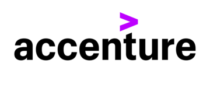
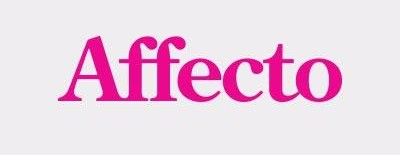

Emergn Latvia
01.2019. - 07.2019.
Software development project for industrial machinery.
Project has BDD approach. Agile software development process. Working in SCRUM teams and using KANBAN board.
My tasks:
Writing test scenarios.Execute tests.
Document incident reports.
Creating report.
Creating test data.
AUDI project
08.2018. - 01.2019.
Accelerating innovation and time-to-market of products and services for the digital industrial world. As a global leader in engineering consulting and R&D services, AKKA supports the world's leading industry players in their digital transformation and throughout their entire product life cycle.
Worked for AUDI. My project was to test embedded software.
My tasks:
Preparing hardware for testing.Executing tests.
Reporting incidents.

Accenture Latvia
09.2017. - 08.2018.
Software development project for Finland in collaboration with USA. Project involved more that 80 people from Latvia and Finland. Split in 5 SCRUM teams.
Provide expertise in the planning, constructing and execution of test scripts. Apply business and functional knowledge including testing standards, guidelines, and testing methodology to meet the team's overall test objectives. Ensure all testing results are easily accessible and understandable. Track defects to closure and keep defect repository up-to-date.
Agile software development process. Working in SCRUM teams and using KANBAN board.My tasks:
Inspecting documentation provided by designer and give feedback.Writing test scenarios.
Preparing test data.
Executing test.
API testing.
Preparing reports. 
TIA project (currently Affecto is owned by CGI)
11.2016. - 07.2017.
TIA is a software product from Oracle. It is widely used for insurance companies.
Mostly maintenance testing and support to insurance companies who use TIA software.
Waterfall type software development process.
My tasks:
Writing test scenarios.Preparing test data.
Executing test.
API testing.
Preparing reports.